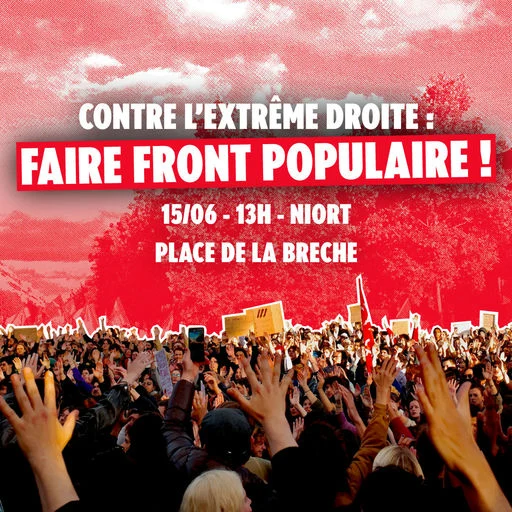

Appel archivé
« Contre l’extrême droite : faire front populaire ! » Appel à Niort le 15 juin
Date indiquée par Facebook · 15 juin 2024
Repères éditoriaux
L’affiche donnait rendez-vous le 15 juin 2024 à 13 h place de la Brèche, à Niort. Nous avons relayé cet appel à se rassembler contre l’extrême droite et à faire front populaire.

Sources
Archive rouge · document diffusé sur Facebook · AR-0002-FB-01355
À lire aussi · Face au budget d’austérité, le PCF propose un pacte d’avenir